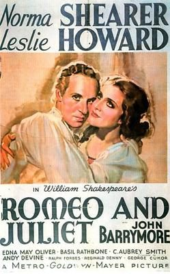

THE STANFORD THEATRE
Now Showing
·
Upcoming
·
Past
·
Search
July 6 - September 18, 2016
Summer 2016
22 bills
July 6 - 8
Gone With the Wind (1939)
238 min
July 9 - 12
Roman Holiday (1953)
118 min
Midnight (1939)
92 min
July 13 - 15
Morocco (1930)
88 min
Shanghai Express (1932)
80 min
July 16 - 19
State of the Union (1948)
124 min
Bedtime for Bonzo (1951)
83 min
July 20 - 22
The Great McGinty (1940)
80 min
The Miracle of Morgan's Creek (1944)
99 min
July 23 - 26
Mr. Smith Goes to Washington (1939)
129 min
Lady for a Day (1933)
92 min
July 27 - 29
Born Yesterday (1950)
103 min
It Should Happen to You (1954)
86 min
July 30 - August 2
Sabrina (1954)
113 min
Beat the Devil (1953)
89 min
August 3 - 5
A Midsummer Night's Dream (1935)
132 min
Duck Soup (1933)
68 min
August 6 - 9
Gigi (1958)
119 min
The Reluctant Debutante (1958)
94 min
August 10 - 12
Top Hat (1935)
101 min
The Gay Divorcee (1934)
107 min
August 13 - 16
Love in the Afternoon (1957)
130 min
Love Me Tonight (1932)
96 min
August 17 - 19
Hamlet (1948)
150 min
To Be or Not to Be (1942)
93 min
August 20 - 23
Meet Me in St. Louis (1944)
113 min
The Band Wagon (1953)
113 min
August 24 - 26
The Cat and the Canary (1939)
72 min
The Ghost Breakers (1940)
85 min
August 27 - 30
The Philadelphia Story (1940)
108 min
The Palm Beach Story (1942)
88 min
August 31 - September 2

Romeo and Juliet (1936)
125 min
The Prisoner of Zenda (1937)
101 min
September 3 - 6
High Noon (1952)
85 min
Destry Rides Again (1939)
94 min
September 7 - 9
Dodsworth (1936)
101 min
Female (1933)
60 min
September 10 - 13
All About Eve (1950)
138 min
The Ghost and Mrs. Muir (1947)
104 min
September 14 - 16
Julius Caesar (1953)
120 min
Animal Crackers (1930)
93 min
September 17 - 18
The Sound of Music (1965)
174 min